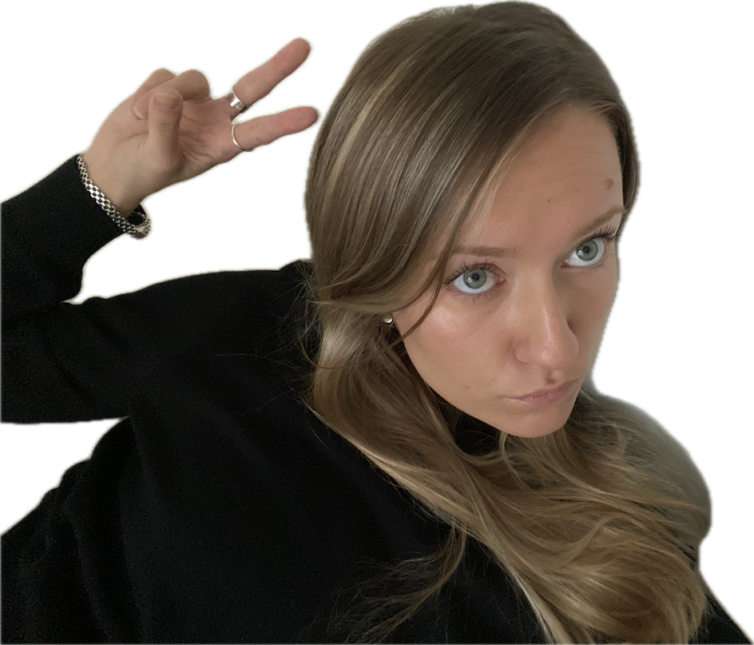

Hi!

I’m passionate about making things nice to look at, and about interaction and movement - physical, digital and personal.
I enjoy working across disciplines – graphic design, interaction design, UX and UI through problem solving.
I love learning new things and exploring how design can shape the world around us.
I aim to bring clarity, professionalism and playfulness to my work.
Skills
Illustrator, InDesign, Figma, Photoshop, AfterEffects
HTML, CSS, Javascript, SQL
User research, Service design
Experience
2026 ILT Education – Internship / thesis project / design work
2025 Supermarket Art Fair – Volunteering
2025 Språkmuseet – Digital interaction in museum
2025 Huddinge kommun – Service design
2024 Hjärtstartarregistret – UX project
Education
Södertörn University
Bachelor in media technology. IT, media and design. August 2023 - june 2026.
Stockholm University
Media and communication. August 2022 - june 2023.
Balettakademien Stockholm
Professional Dancers Education. August 2019 - may 2021.